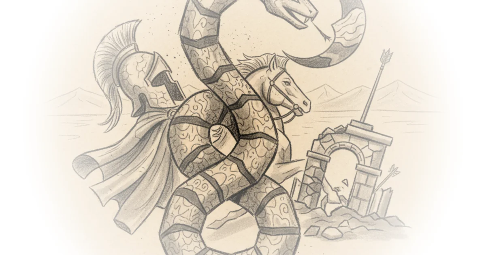

Parthian Army: Rome’s Toughest Rival
Commentary by Brian Edwards
Transcript excerpt on Kings and Generals
The Paththean Empire made its mark in the history of Eurasia as the most formidable enemy of the Roman Empire. And yet, while historians possess a treasure trove of information about the Roman legions, we know precious little about the structure of the Paththean armies, which routinely defeated them. For decades, many assumptions have been made about the Paththeians and their military. As the Paththeians themselves were of nomadic origins, many scholars once believed that their army must have resembled their roots, consisting of a disorganized ad hoc cavalry force that was drawn up at the Shahan Shar's whim.
Yet, more recently, archaeological discoveries and modern readings of texts have yielded evidence that the Paththean military was a far more sophisticated force than previously assumed. Welcome to our video on the Army of the Paththean Empire, one of the most powerful military forces in the ancient world. The Paththeians took their enemies by surprise and by storm. And while we can armchair solutions to that all day, we should be watching the ones actually trying to raid our computers.
You guessed it, we need to use NordVPN, our sponsor today, with an offer at nordvpn.com/kingsandgenerals. Add NordVPN to all your digital devices and you'll be protected online. That's all you need to know. Protected from what?
Well, all that data going back and forth between you and a thousand companies and individuals passes through plenty of unknown hands. And that's extra true on a public network. To be able to know it wasn't accessed, you need to encrypt it into oblivion. NordVPN does just that with a single click and instant speed, meaning you can't be robbed, your ISP can't monitor you, and advertisers and data brokers won't be able to pin you down.
Of course, NordVPN also makes your IP address your choice, meaning you can digitally be anywhere in the world to bypass regional blocks on anything from censored news to streaming services. And Nord Threat Protection also watches your devices for malware, viruses, or incoming scams and keeps you safe, all on a single subscription. Let's make it even better. Claim four months of extra coverage for free on your 2-year plan when you sign up at They offer a 30-day money back guarantee, so there's no risk in giving it a go.
That's Much like with Roman and Greek military history, the study of the Paththean ...